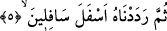

5. Sonra onu aşağıların aşağısına indirdik.
İnsanoğlunu Cehennem ehlinden kıldık ki bu bütün çirkinliklerden daha çirkin ve tüm
aşağılıklardan daha aşağıdır. Bunun sebebi bizim kendisini yaratmış olduğumuz sıfat
üzerine yaşamamış olmasıdır. Bu sıfatların gereğine göre amel etseydi yücelerin en
yücesinde olacaktı. Kısacası insanoğlu kötü haliyle en güzel biçimdeki durumunu
sûreten ve manen en çirkin şekle sokmuştur. Zira bir insanın zâhirînin değişip,
çirkinleşmesi ancak bâtınının değişmesi ve çirkinleşmesinden dolayıdır.
Âyette yer alan “sâfilîn” kelimesinden maksad mü’minlerin asileridir. “Esfel”
kelimesinin birbirinden farklı ve bir çok anlamı vardır. “Esfele safilîn” ise Arapça
cümle analizi açısından “indirdik” fiilinin mef’ûlünden haldir. Buna göre âyetin mânâsı;
sonra onu aşağıların aşağısında olduğu halde Biz o noktaya indirdik, demek olur. Veya
bu kısım gizli bir “mekan” kelimesinin sıfatı da olabilir, bu durumda âyetin mânâsı: Biz
onu en aşağıların mekanı olan mekana indirdik demek olur. Ancak bu iki ihtimalden
birincisi daha ağır basmaktadır.
Öte yandan bu âyette verilen hüküm insanların bazı fertleri açısından böyledir. Çünkü
onlar hayvânî ve behîmî şehvetlerin denizine dalmışlar, cismânî, şeytânî ve
canavarlaşmış, lezzetin karanlıklarına dalmışlardır.
Bu âyette, itibar edilecek olanın zâhirî sûret değil, bâtınî sûret olduğuna işâretler
vardır. Bundan dolayı Şeyh Sâdi şöyle der:
Uzun boy değil, doğru yol lâzımdır,
Yoksa kâfir de sûret bakımından bizim gibidir.
Zâhiri sûreti en güzel biçimde olan nice kimseler vardır ki onlar bâtınî açıdan en
çirkin durumdadırlar. Bu nedenle insanlar kıyamet günü mahşere bölük bölük gelirler.
Çünkü onların bâtınî sıfatları, zâhirî biçimleri şeklinde tezahür eder. Böylece insanların
dış biçimleri kendi sıfatlarına uygun olarak çeşit çeşit olur.
Bazı âlimlerin ifâdesine göre “onu aşağıların aşağısına indirdik” âyetinin mânâsı; onu
erzel-i ömre geri çevirdik demektir. Erzel-i ömür insanın gençliğinin ardından yaşlanıp,
köhnemesi, bir zamanlar güçlü iken zayıflaması demektir. Nitekim bu gerçeğe Kur’an-ı
Kerim’de şöyle işâret olunuyor: “Kime uzun ömür verirsek biz onun gelişmesini
tersine çeviririz” (Yasin, 36/68) Bunun mânâsı; Biz kime uzun ömür verirsek daha
sonra yaratılışında onu tekrar başa çeviririz. Böylece bir zamanlar dimdik olan beli
bükülür, simsiyah saçları ağırır, kulağı, gözü eski hâlini kaybeder. Vücudunda ne varsa
tümü değişikliğe uğrar.